| Date | Authors | Description |
|---|---|---|
| May 5, 2026 | Haobo LIN | Total System Design v1.0: consolidated system design document, including all teams' internal architecture diagrams and process flow descriptions |
1. Overview
This document consolidates the internal system designs submitted by all six groups — S1, S2, V1, V2, M1, and M2 — into a single reference. Each section presents the group's process flow diagrams along with captions and descriptions. For cross-team interface contracts, see the Total Interface Specification v1.0.
1.1 System Overview
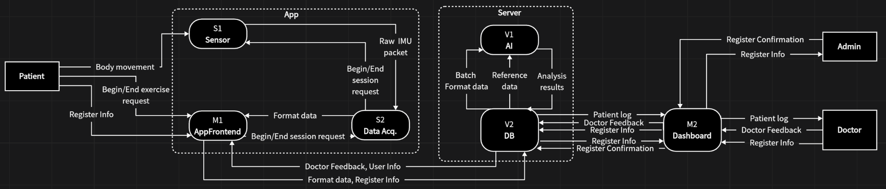
Figure 1.1 — Total System Overview. End-to-end data flow across all six groups. The App boundary (dashed left) and Server boundary (dashed right) separate local from network communication.
The system is structured across two physical contexts:
App side (all components run on the same mobile device):
- The Patient performs exercises; body movements are captured by the S1 Sensor via Bluetooth IMU hardware.
- S1 passes raw IMU packets to S2 Data Acq. for validation and formatting.
- M1 AppFrontend controls session start/end for S2, receives formatted data back, and provides real-time visual feedback to the patient.
- M1 is the sole gateway to the Server — it sends session measurements and registration data and receives user information and AI-generated feedback.
Server side (cross-device, HTTP REST):
- V2 DB is the central backend hub; all server-side teams communicate exclusively through V2.
- V1 AI Engine pulls batch format data and reference data from V2, runs AI inference, and writes analysis results and suggestion statuses back.
- M2 Dashboard enables clinicians (doctors and admins) to view patient motion logs, manage rehabilitation suggestions, and oversee account registration — all via V2.
2. S1 — Sensor Group
S1 · SensorS1 is responsible for reading raw IMU data from Bluetooth-connected wearable sensors attached to the patient's limbs, and for responding to session lifecycle commands issued by S2.
2.1 Internal Process Flow
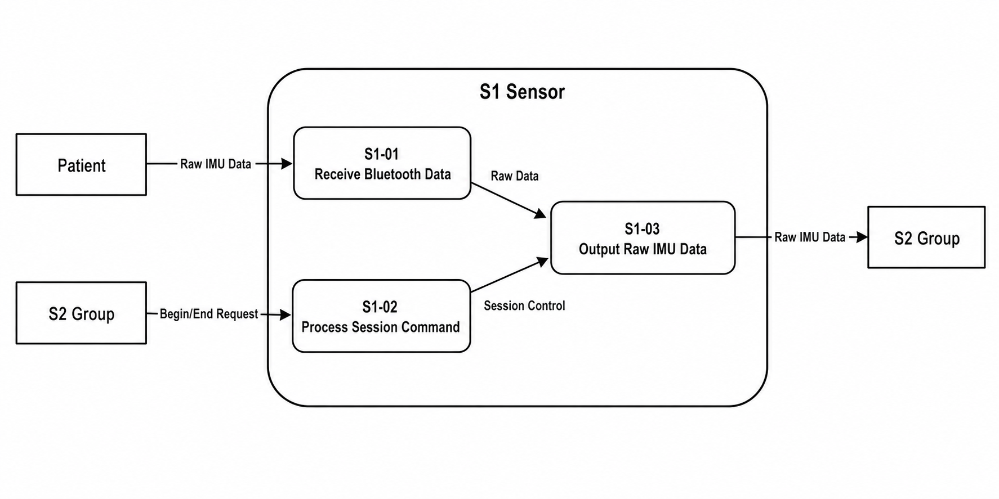
Figure 2.1 — S1 Sensor: Internal Process Flow. Three sub-processes handle Bluetooth reception, session command processing, and output aggregation.
S1 is decomposed into three sub-processes:
- S1-01 — Receive Bluetooth Data: Continuously listens for and receives raw IMU frames broadcast by the patient's wearable sensors over Bluetooth. Outputs a raw data stream to S1-03.
- S1-02 — Process Session Command: Receives Begin/End Session requests from S2. Translates these lifecycle signals into start and stop controls that gate the data flow in S1-03. When a session ends, S1-02 signals S1-03 to halt output.
- S1-03 — Output Raw IMU Data: Aggregates the raw data stream from S1-01 under session control from S1-02, then forwards the resulting Raw IMU Data packets to S2 Group. S1-03 only emits data while a session is active.
s1.sensor.read() and
s1.sensor.status() for S2 to poll data and check connection health, and
s1.session.start() / s1.session.stop() for session lifecycle control.
All calls are same-device function calls (see
IF-S1-S2 and IF-S2-S1).
3. S2 — Data Acquisition Group
S2 · Data AcquisitionS2 is the data processing hub on the App side. It receives raw IMU packets from S1, validates and formats them, computes target joint angles, and delivers structured Format Data to M1 asynchronously. S2 also includes a simulated data generator for offline testing.
3.1 Internal Process Flow
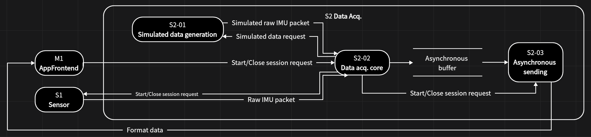
Figure 3.1 — S2 Data Acquisition: Internal Process Flow. Three modules — simulated data generation, core acquisition, and asynchronous output — collaborate through a shared buffer.
S2 contains three internal modules:
- S2-01 — Simulated Data Generation: Produces synthetic raw IMU packets on demand when no physical sensor is connected. Activated by a Simulated data request from S2-02 and returns a Simulated raw IMU packet. This module enables development and testing without hardware dependency.
- S2-02 — Data Acquisition Core: The central processing unit. Receives Start/Close session requests from M1 AppFrontend and propagates them to S1 Sensor as Start/Close session requests. During an active session, S2-02 reads Raw IMU packets from S1 (or simulated packets from S2-01), validates the data, computes target joint angles, and writes the results into the Asynchronous buffer.
- S2-03 — Asynchronous Sending: Drains the Asynchronous buffer and delivers Format data to M1 AppFrontend. The decoupled buffer design means M1 can poll at its own rate without blocking sensor acquisition. S2-03 also receives Start/Close session requests from S2-02 to reset its state at session boundaries.
s2.data.read()
always returns whatever has accumulated since the last call without stalling
upstream processing.
4. V1 — AI Engine Group
V1 · AI EngineV1 runs on the server side. It pulls batched sensor measurements from V2, applies a machine-learning inference pipeline, and writes rehabilitation recommendations and suggestion statuses back to V2. V1 has no direct interface with any App-side component.
4.1 Internal Process Flow
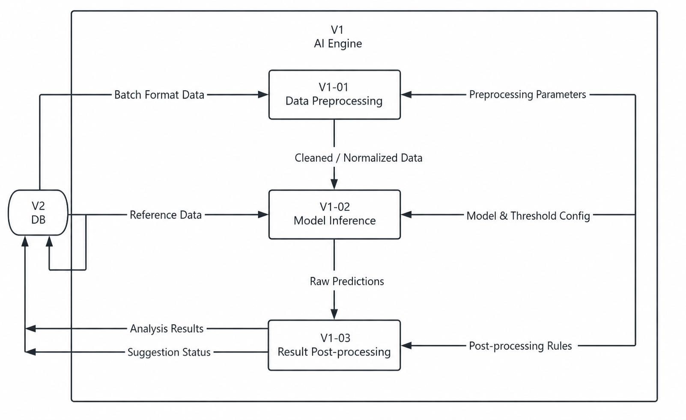
Figure 4.1 — V1 AI Engine: Internal Process Flow. A three-stage pipeline: data preprocessing, model inference, and result post-processing. V2 DB is the sole external data source and sink.
V1 is a three-stage sequential pipeline:
- V1-01 — Data Preprocessing: Fetches Batch Format Data from V2 DB and applies cleaning and normalisation according to Preprocessing Parameters. Outputs Cleaned / Normalised Data to the next stage.
- V1-02 — Model Inference: Receives the cleaned data and queries V2 for Reference Data (e.g. gold-standard motion templates). Runs model inference with the configured Model & Threshold Config to produce Raw Predictions.
-
V1-03 — Result Post-processing:
Applies Post-processing Rules to the raw predictions to produce human-readable
rehabilitation recommendations. Writes Analysis Results and
Suggestion Status back to V2 DB via
POST /recommendations.
GET /measurements/:sessionId and writes to
POST /recommendations. No direct connection to M1, M2, S1, or S2.
5. V2 — Database Backend Group
V2 · Database BackendV2 is the central server-side backend. It exposes a full HTTP REST API consumed by M1, M2, and V1. Internally it is built on Node.js with an SQLite database (via sql.js, no native bindings required) persisted to disk after every write operation.
5.1 Server Initialisation Flow
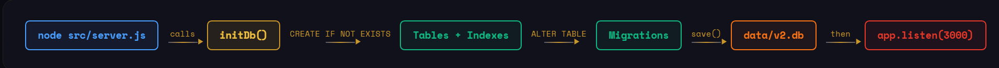
Figure 5.1 — V2: Server Initialisation Sequence.
On startup, initDb() creates all tables and indexes, runs migrations, saves the
database to disk, then starts the HTTP listener on port 3000.
When V2 starts, the following sequence runs synchronously before accepting any requests:
initDb() uses CREATE IF NOT EXISTS so the schema is idempotent —
a restart on an existing database does not destroy data. Migration ALTER TABLE
statements run afterwards to add columns introduced after the initial schema. Once
the database is stable, the HTTP server begins accepting connections.
5.2 Request Handling Flow
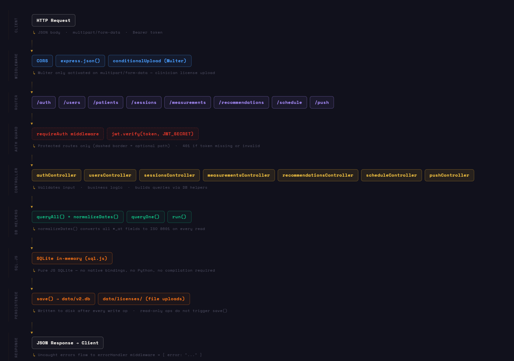
Figure 5.2 — V2: Per-Request Processing Pipeline.
Every HTTP request passes through middleware, routing, optional auth guard, controller logic,
database helpers, and finally produces a JSON response. Write operations persist the database
to disk via save().
Every inbound request traverses six layers:
-
Middleware:
CORS,express.json()for JSON body parsing, andconditionalUpload(Multer)which activates file upload handling only onmultipart/form-datarequests (used for clinician licence file uploads). -
Routers: Requests are dispatched to one of eight route groups —
/auth,/users,/patients,/sessions,/measurements,/recommendations,/schedule,/push. -
Auth Guard: Protected routes invoke
requireAuthmiddleware which callsjwt.verify(token, JWT_SECRET). Returns HTTP 401 if the token is missing or invalid. -
Controllers: Each router has a dedicated controller
(
authController,usersController,sessionsController,measurementsController,recommendationsController,scheduleController,pushController) that validates input, applies business logic, and builds queries via DB helpers. -
DB Helpers / sql.js:
queryAll()+normalizeDates()(converts all*_atfields to ISO 8601 on every read),queryOne(), andrun()operate on an SQLite in-memory store (pure JS, no compilation required). -
Persistence: After every write operation,
save()flushes the in-memory database todata/v2.db. File uploads are written separately todata/licenses/. Read-only operations do not triggersave().
Uncaught errors propagate to a global errorHandler middleware that returns
{ "error": "..." } JSON to the client.
6. M1 — App Frontend Group
M1 · App FrontendM1 is the patient-facing mobile application. It manages user authentication, BLE sensor connectivity, session lifecycle, real-time exercise feedback, data upload to the server, and push notification reception. M1 is the sole App-side gateway to the V2 backend.
6.1 Internal Module Architecture
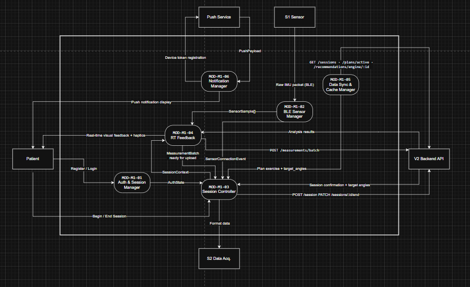
Figure 6.1 — M1 App Frontend: Internal Module Architecture. Six modules cooperate around the central Session Controller (MOD-M1-03). External actors are the Patient, S1 Sensor (BLE), S2 Data Acq., Push Service, and V2 Backend API.
M1 is composed of six modules:
- MOD-M1-01 — Auth & Session Manager: Handles patient Register / Login flows. Issues auth requests to V2 Backend API and propagates the resulting AuthState (JWT token and user identity) to MOD-M1-03 so downstream modules can make authenticated API calls. Also receives the patient's Begin / End Session intent and forwards it to M1-03.
- MOD-M1-02 — BLE Sensor Manager: Manages the Bluetooth Low Energy connection to S1 Sensor. Receives raw IMU packets over BLE, wraps them into SensorSample[] objects, and emits them to MOD-M1-03 along with SensorConnectionEvent notifications (connected / disconnected / error).
-
MOD-M1-03 — Session Controller:
The central coordinator of M1. On session start, it forwards a SessionContext
(sessionId, userId, sensorJointMapping, payloadStatus) to S2 Data Acq.
and begins polling
s2.data.read()for Format data. It buffers incoming MeasurementBatch objects and raises them to MOD-M1-04 for feedback rendering and to MOD-M1-05 for upload. On session end, it callsPATCH /sessions/:id/endon V2. - MOD-M1-04 — RT Feedback: Consumes MeasurementBatch data from M1-03 to render real-time visual feedback and haptics for the patient (e.g. angle deviation indicators, vibration alerts). Also receives SensorConnectionEvent updates to display sensor status in the UI.
-
MOD-M1-05 — Data Sync & Cache Manager:
Uploads buffered measurements to V2 via
POST /measurements/batch. Also fetches sessions, active exercise plans, and AI recommendations from V2 usingGET /sessions,GET /plans/active, andGET /recommendations/engine/:idto populate the patient's plan view. -
MOD-M1-06 — Notification Manager:
Registers the device push token with V2 via
POST /push/registerand forwards incoming PushPayload messages from the Push Service to the patient as on-screen push notification displays.
7. M2 — Dashboard Group
M2 · DashboardM2 is the clinician-facing web dashboard. It serves two user roles — Doctors who review patient motion data and manage rehabilitation suggestions, and Admins who oversee account registration, roles, system reports, and notifications. All data operations are performed through V2 DB.
7.1 Architecture Overview
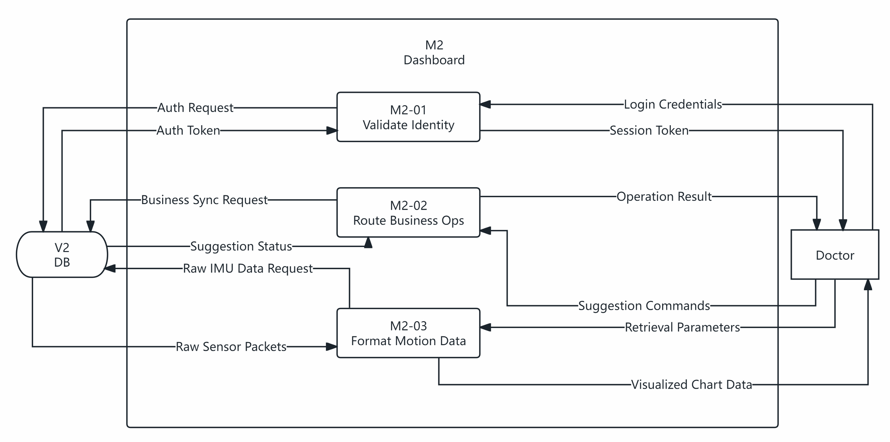
Figure 7.1 — M2 Dashboard: Architecture Overview. Three internal modules handle identity validation, business operation routing, and motion data formatting. Both Doctor and V2 DB are external actors.
At the architectural level, M2 has three internal modules interfacing with the Doctor and V2:
- M2-01 — Validate Identity: Receives Login Credentials from the Doctor, sends an Auth Request to V2, and returns a Session Token upon successful authentication.
- M2-02 — Route Business Ops: Handles the core business logic loop. Issues Business Sync Requests to V2 for patient data. Receives Suggestion Commands and Retrieval Parameters from the Doctor, applies them, and returns Operation Results. Also sends Suggestion Status updates and Raw IMU Data Requests back to V2.
- M2-03 — Format Motion Data: Fetches Raw Sensor Packets from V2, processes them into chart-ready format, and delivers Visualised Chart Data to the Doctor's browser.
7.2 System Architecture
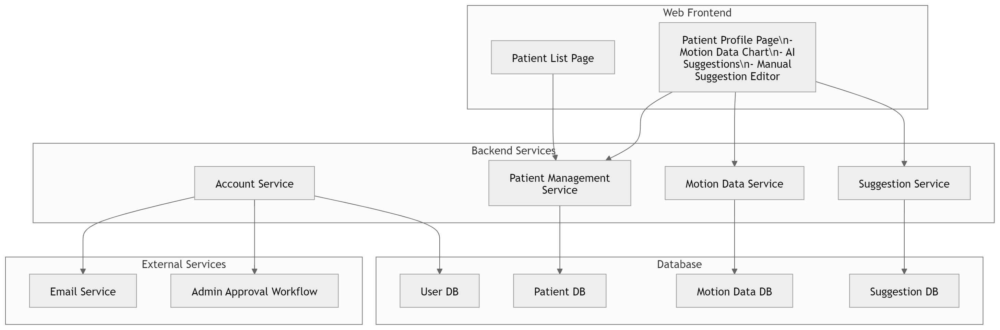
Figure 7.2 — M2 Dashboard: System Architecture (Doctor-side view). Web frontend pages delegate to four backend services (Account, Patient Management, Motion Data, Suggestion), each backed by a dedicated database. External services handle email notifications and admin approval workflows.
The doctor-facing side of M2 is structured in three layers:
- Web Frontend: A Patient List Page for browsing patients, and a Patient Profile Page that embeds a motion data chart, AI-generated suggestions, and a manual suggestion editor for the doctor.
- Backend Services: Account Service manages authentication; Patient Management Service handles patient records; Motion Data Service processes and queries sensor data; Suggestion Service manages AI and manual suggestions. External Services include an Email Service and an Admin Approval Workflow for doctor registration.
- Database: Four separate stores — User DB, Patient DB, Motion Data DB, and Suggestion DB — all hosted within V2.
7.3 Doctor Workflow
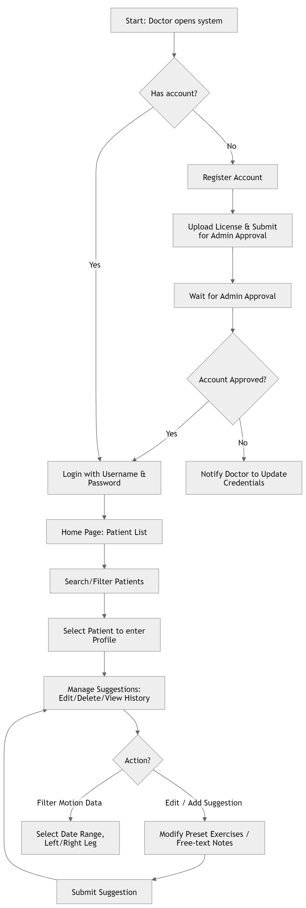
Figure 7.3 — M2 Dashboard: Doctor Workflow Flowchart. Full lifecycle from first-time registration through admin approval, login, patient selection, motion data filtering, and suggestion management.
The doctor's interaction with M2 follows this flow:
- First-time registration: Doctor registers an account, uploads a medical licence, and submits for admin approval. If the account is not approved, the doctor is notified to update credentials. Once approved, the doctor can log in.
- Patient management: After login, the doctor lands on the Home Page: Patient List, searches or filters patients, and selects a patient to enter their profile.
- Suggestion management: Inside the patient profile, the doctor can manage suggestions (edit, delete, view history). Two parallel actions are available: (1) Filter Motion Data — select a date range and left/right leg; (2) Edit / Add Suggestion — modify preset exercises or add free-text notes. Both paths conclude with Submit Suggestion.
7.4 Doctor Sequence
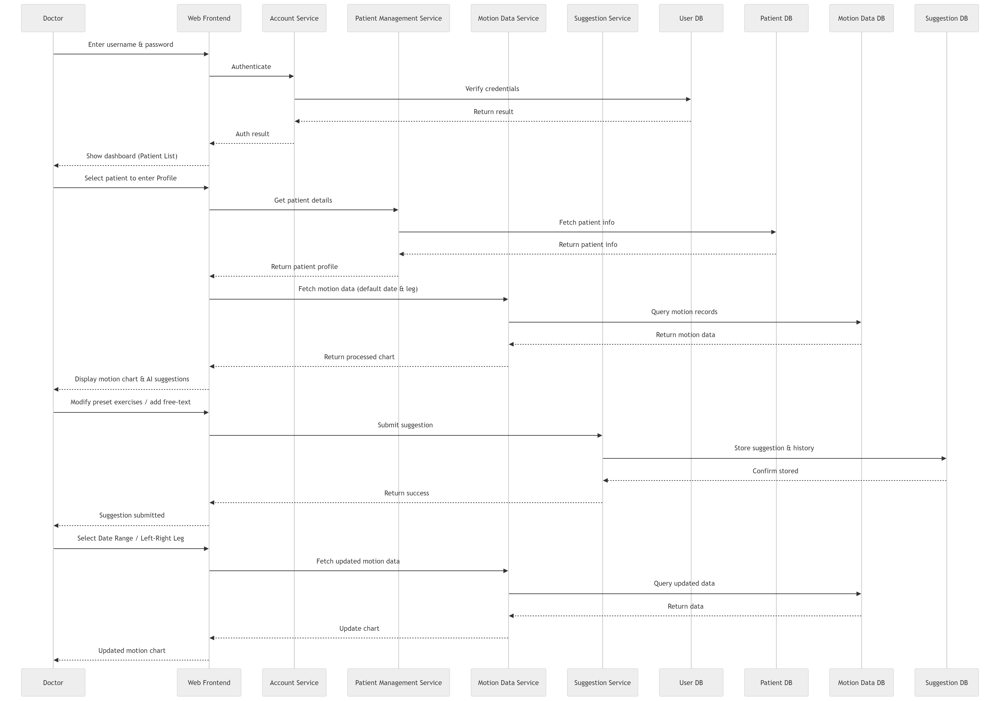
Figure 7.4 — M2 Dashboard: Doctor Sequence Diagram. Message flow across Doctor, Web Frontend, Account Service, Patient Management Service, Motion Data Service, Suggestion Service, and all database components for a complete login-to-submit-suggestion session.
The sequence diagram shows the full interaction for a doctor session:
- Authentication: Doctor enters credentials → Web Frontend calls Account Service → credentials verified against User DB → auth result returned → dashboard (Patient List) displayed.
- Patient selection: Doctor selects a patient → Web Frontend calls Patient Management Service → patient info fetched from Patient DB → patient profile returned to the frontend.
- Motion data display: Frontend fetches motion data (default date, both legs) → Motion Data Service queries Motion Data DB → returns processed chart data → chart and AI suggestions displayed.
- Suggestion submission: Doctor modifies preset exercises or adds free-text → Frontend submits suggestion to Suggestion Service → stored in Suggestion DB → success confirmation returned → frontend confirms to doctor.
- Motion data filtering: Doctor selects a date range or specific leg → Frontend fetches updated data → Motion Data Service queries and returns updated records → chart refreshed.
7.5 Admin Workflow
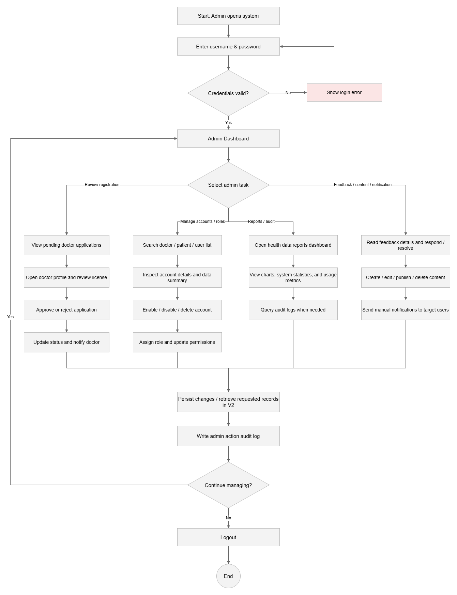
Figure 7.5 — M2 Dashboard: Admin Workflow Flowchart. Admin login leads to a multi-branch task selection covering doctor registration review, account/role management, health data reports, and feedback/content/notification management.
The administrator workflow is organised around four task branches:
- Review Registration: View pending doctor applications → open doctor profile and review licence → approve or reject → update status and notify the doctor.
- Manage Accounts / Roles: Search doctor/patient/user list → inspect account details and data summary → enable, disable, or delete account → assign role and update permissions.
- Reports / Audit: Open health data reports dashboard → view charts, system statistics, and usage metrics → query audit logs when needed.
- Feedback / Content / Notification: Read feedback and respond/resolve → create, edit, publish, or delete content → send manual notifications to target users.
After each action, changes are persisted to V2 and an admin action audit log entry is written. The admin then decides to continue managing or log out.
7.6 Admin Sequence
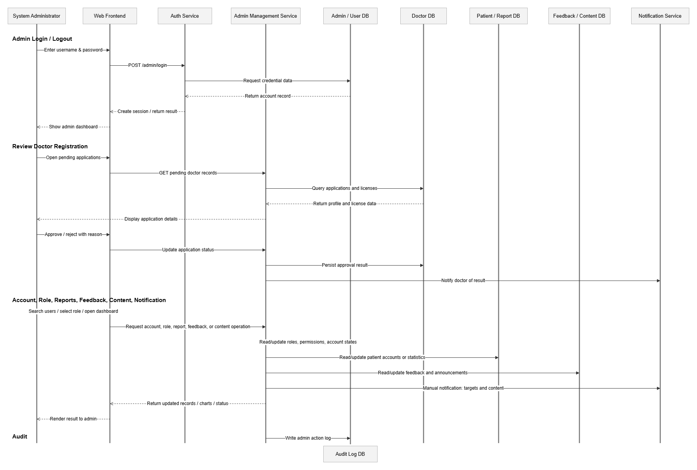
Figure 7.6 — M2 Dashboard: Admin Sequence Diagram. Three scenario groups — Admin Login/Logout, Review Doctor Registration, and Account/Role/Reports/Feedback/Content/Notification management — shown across System Administrator, Web Frontend, Auth Service, Admin Management Service, and all relevant database components.
The admin sequence diagram covers three scenario groups:
-
Admin Login / Logout: Admin enters credentials →
POST /admin/loginsent to Auth Service → credentials verified against Admin/User DB → session created → admin dashboard displayed. - Review Doctor Registration: Admin opens pending applications → Auth Service fetches pending doctor records → queries Doctor DB for applications and licences → profile and licence displayed → admin approves or rejects → approval result persisted → doctor notified via Notification Service.
- Account / Role / Reports / Feedback / Notification: Admin searches users and selects role or operation → Admin Management Service reads/updates Admin/User DB, Patient DB, Feedback/Content DB, or Notification Service as appropriate → updated records/charts/status returned → result rendered to admin → admin action log written to Audit Log DB.
7.7 Full System Architecture
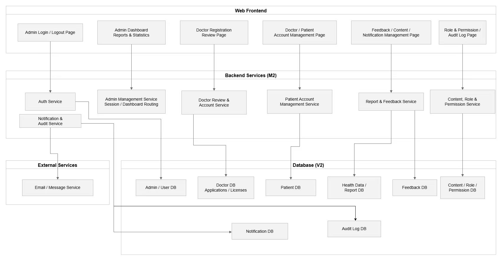
Figure 7.7 — M2 Dashboard: Full System Architecture. Complete view of the M2 web frontend, all backend services, external services, and the full database layer (hosted in V2). Covers both doctor-facing and admin-facing subsystems.
The full M2 architecture spans three tiers:
- Web Frontend (6 pages): Admin Login/Logout Page; Admin Dashboard Reports & Statistics; Doctor Registration Review Page; Doctor/Patient Account Management Page; Feedback/Content/Notification Management Page; Role & Permission / Audit Log Page.
- Backend Services — M2 (6 services): Auth Service; Notification & Audit Service; Admin Management Service (session / dashboard routing); Doctor Review & Account Service; Patient Account Management Service; Report & Feedback Service; Content, Role & Permission Service. An Email / Message Service is the sole external dependency.
- Database — V2 (8+ stores): Admin/User DB; Doctor DB (Applications/Licences); Patient DB; Health Data/Report DB; Feedback DB; Content/Role/Permission DB; Notification DB; Audit Log DB.
Posted by Team S2 · DSD 2025–2026 · UTAD × Jilin University